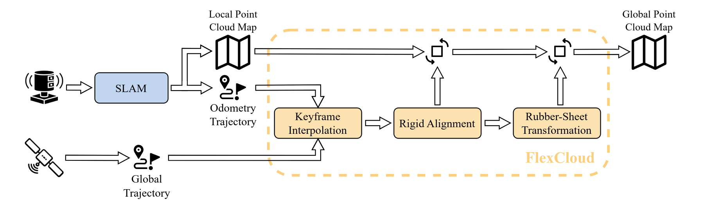
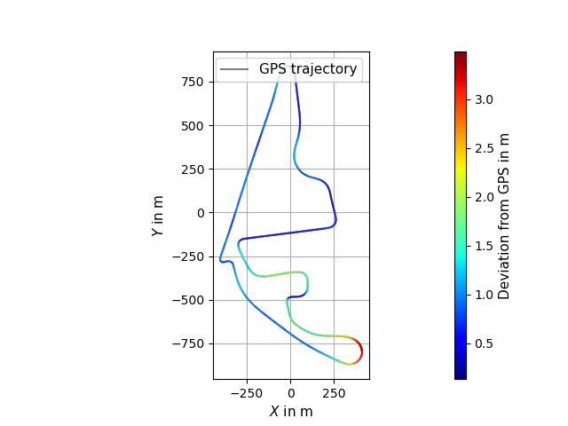
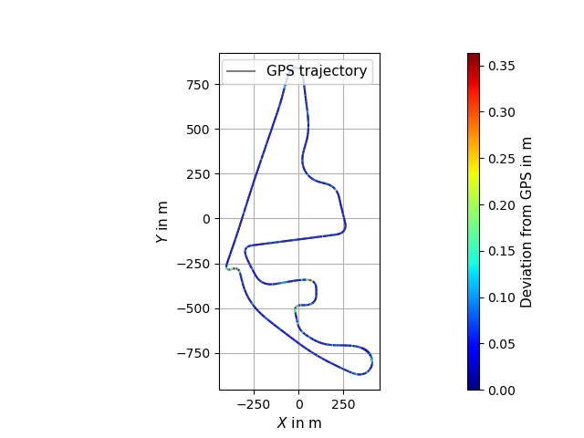
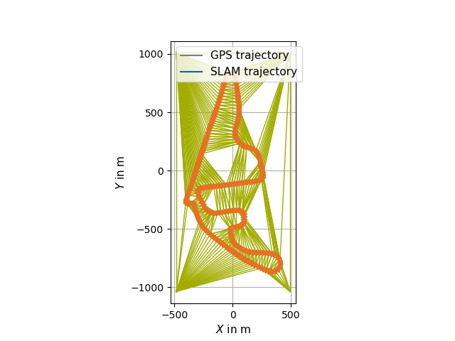

Functionality & References¶
FlexCloud georeferences a SLAM-built point cloud map by aligning its trajectory to a GNSS / reference trajectory and rectifying the map accordingly. The pipeline is split into two stages: trajectory matching and evaluation.

Trajectory Matching¶
The transformation is computed from a pair of trajectories — a GNSS/reference trajectory and a SLAM trajectory. The trajectories do need to be time-synchronized. However, it is not required that they are triggered.
1. Projection of global coordinates (Keyframe Interpolation / Georeferencing)¶
Global coordinates may be projected into a local ENU coordinate system via GeographicLib.
2. Keyframe interpolation¶
- Keyframes are selected from the SLAM trajectory and matching reference positions are interpolated.
- Interpolation uses a third-order spline implementation from Eigen.
3. Rigid alignment (Georeferencing)¶
The SLAM trajectory is aligned to the reference using the Umeyama algorithm and the transformation is applied to the full SLAM trajectory.

4. Rubber-sheet transformation (Georeferencing)¶
A piecewise linear rubber-sheet transformation, based on the concept of Griffin & White and using Delaunay triangulation from CGAL, corrects accumulated drift in 3D:
- Control points can be excluded automatically via standard-deviation thresholding.
- Indices can be excluded manually and displaced in xy via CLI / YAML parameters.
- The computed transformation is applied to both the SLAM poses and the point cloud map.


Evaluation (Georeferencing)¶
Pass --evaluation to flexcloud-georeferencing to:
- Print RMSE, mean, median, stddev, min and max of the per-point euclidean deviation between the reference trajectory and both the Umeyama-aligned and the rubber-sheeted SLAM trajectory (single side-by-side table in the terminal).
- Visualise per-segment deviations in the Rerun viewer as two extra jet-colormap-shaded
linestrings:
Trajectory_align_deviationandTrajectory_RS_deviation(segment label = deviation in meters).
References¶
If you use FlexCloud in academic work, please cite the preprint:
@conference{leitenstern2025flexcloud,
author={Maximilian Leitenstern and Marko Alten and Christian Bolea-Schaser and Dominik Kulmer and Marcel Weinmann and Markus Lienkamp},
title={FlexCloud: Direct, Modular Georeferencing and Drift-Correction of Point Cloud Maps},
booktitle={Proceedings of the 11th International Conference on Vehicle Technology and Intelligent Transport Systems - Volume 1: VEHITS},
year={2025},
pages={157-165},
publisher={SciTePress},
organization={INSTICC},
doi={10.5220/0013359600003941},
isbn={978-989-758-745-0},
}
- Preprint on arXiv — https://arxiv.org/abs/2502.00395
- Published version (DOI) — https://doi.org/10.5220/0013359600003941
Background literature¶
- Umeyama, S. Least-Squares Estimation of Transformation Parameters Between Two Point Patterns. IEEE TPAMI, 1991. PDF
- Griffin, P. F. & White, M. Piecewise linear rubber-sheet map transformations. The American Cartographer, 1985. Paper
- GeographicLib — https://geographiclib.sourceforge.io/2009-03/classGeographicLib_1_1LocalCartesian.html
- CGAL — https://www.cgal.org/
Developers¶
- Maximilian Leitenstern, Institute of Automotive Technology, School of Engineering and Design, Technical University of Munich, 85748 Garching, Germany
- Marko Alten (student research project)
- Christian Bolea-Schaser (student research project)